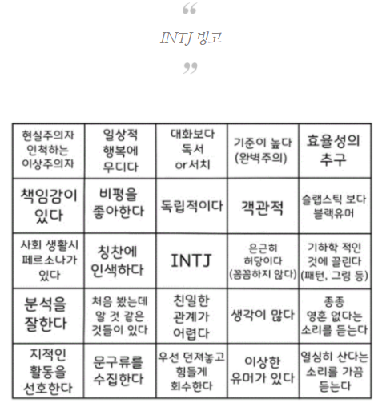

더 자세한 내용 클릭
-지식이 풍부하다
-계획적으로 행동한다
-현실적이다
-앞에 나서는 것을 싫어함
-공상을 즐김
-결단력과 인내심이 강하다
-질서,전통적인걸 혐오함
-성취욕구가 강함
-전략적 사고가 뛰어남
-개인주의적 성향
-상상력이 뛰어남
-복잡한 문제를 다루길 좋아함
-남의 의견 잘 비판함
-혼자 있는 시간 즐김
-단체 활동 극혐하지만 막상 하면 모임 주도함
-사람 많고 시끄러운 장소 싫어!
-개인주의 성향 짙어서 이기적인 사람 많음
-모든 걸 계획해서 움직이는 경향
-때문에 돈관리도 잘한다
-감정에 이리저리 휘둘리는 거 싫어함
-친구가 고민상담 요청할 때 귀찮음
-은근 수다쟁이
-인간관계 맺고 끊음 확실함
-사람한테 정 붙이는거 어려움
-공상이 잦다.
-어떤 사안이나 작품에 대해 다양한 각도에서 해석하는거 좋아함
-이성적인데 감성적임
-자기 성격 이상하다고 스스로 생각함
-근데 웃긴건 남들도 이상하다 생각함
-정 없다는 말 종종들음
-무언가 꽂히면 끝까지 파고든다
-사람 얼굴이나 이름 잘 기억 못함
-남 눈치 잘 안보고 MY WAY!